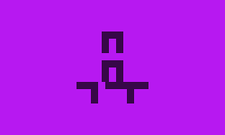

Catalog
Factions & Figures
docs/catalog/factions-and-figures.md
Lore & Cosmology
docs/catalog/lore-and-cosmology.md
Magic & Power
docs/catalog/magic-and-power.md
Character Guide
Archetypal Builds
docs/character-guide/archetypal-builds.md
Character Exemplars
docs/character-guide/character-exemplars.md
Character Guide Overview
docs/character-guide/overview.md
Factions At War
Arcanum Legions: A Catalogue of Heresies
docs/factions-at-war/arcanum-legions.md
Progenitor Factions: The War in Heaven
docs/factions-at-war/progenitor-factions.md
Factions At War / Doctrines
Doctrines of War: A Comparative Analysis
docs/factions-at-war/doctrines/strategic-doctrines-overview.md

Unconventional Threats: A Report on Factional Response Doctrines
docs/factions-at-war/doctrines/unconventional-threats.md
Factions At War / Main Factions Military
The Adamant Phalanx: A Tactical Primer
docs/factions-at-war/main-factions-military/the-adamant-phalanx.md
The Hidden Dagger: An Assessment of Middle Pillar Special Operations
docs/factions-at-war/main-factions-military/the-hidden-dagger.md
The Living Tide: A Scout's Report
docs/factions-at-war/main-factions-military/the-living-tide.md
Getting Started
Magic: A Primer
docs/getting-started/magic-overview.md
The Three Pillars: A Faction Comparison
docs/getting-started/the-three-pillars-comparison.md

The Three Pillars: An Overview of the Major Factions
docs/getting-started/the-three-pillars-overview.md
Library

Library / Forbidden Texts
A Diver's Journal
docs/library/forbidden-texts/a-divers-journal.md
The Heresy of the Husks
docs/library/forbidden-texts/the-heresy-of-the-husks.md
Library / Historical Events

Library / Historical Events / War Of The Shifting Throne
Infiltration of the Warring Kingdom
docs/library/historical-events/war-of-the-shifting-throne/infiltration-of-the-warring-kingdom.md
The War of the Shifting Throne: An Overview
docs/library/historical-events/war-of-the-shifting-throne/overview.md
The Sundering of the Pillars: The Factional Schisms of the Great Silence
docs/library/historical-events/war-of-the-shifting-throne/the-sundering-of-the-pillars.md
Library / Modern Treatises
The Mundane and the Miraculous: A Study in Techno-Magical Symbiosis
docs/library/modern-treatises/techno-magical-symbiosis.md

The Mage as an Engine: A Technocratic View
docs/library/modern-treatises/the-mage-as-an-engine.md
Library / Sociology And Culture
Magic System
Magic System / Advanced Topics
Advanced Magical Diagnostics
docs/magic-system/advanced-topics/advanced-magical-diagnostics.md
Contested Magic: A Primer on Conceptual Conflict
docs/magic-system/advanced-topics/contested-magic.md
Esoteric & Dissonant Cycles: A Deep Dive
docs/magic-system/advanced-topics/dissonant-cycles-deep-dive.md
K10 Rituals and Artifacts
docs/magic-system/advanced-topics/rituals-and-artifacts.md
K10 Visual Aesthetics and Manifestations
docs/magic-system/advanced-topics/visuals-and-aesthetics.md
Magic System / Core Mechanics
The Price of Power: A Study of Magical Corruption
docs/magic-system/core-mechanics/corruption.md
Foundational Cycles: The 22 Arcana
docs/magic-system/core-mechanics/cycles.md
Pathways of Power: A Guide to Milestones & Progression
docs/magic-system/core-mechanics/milestones-and-progression.md
Magic System / Paths
Magic System / Sefirot
S1: Keter (The Crown)
docs/magic-system/sefirot/s1-keter.md
S2: Chokmah (Wisdom)
docs/magic-system/sefirot/s2-chokmah.md
S3: Binah (Understanding)
docs/magic-system/sefirot/s3-binah.md
S4: Chesed (Mercy)
docs/magic-system/sefirot/s4-chesed.md
S5: Gevurah (Severity)
docs/magic-system/sefirot/s5-gevurah.md
S6: Tiferet (Beauty)
docs/magic-system/sefirot/s6-tiferet.md
S7: Netzach (Victory)
docs/magic-system/sefirot/s7-netzach.md
S8: Hod (Splendor)
docs/magic-system/sefirot/s8-hod.md
S9: Yesod (The Foundation)
docs/magic-system/sefirot/s9-yesod.md
S10: Malkuth (The Kingdom)
docs/magic-system/sefirot/s10-malkuth.md
World Lore / Cosmology
Da'at: The Abyss
docs/world-lore/cosmology/daat-the-abyss.md
The Cosmic Framework: Divine, Abyssal, and Parasitic Realms
docs/world-lore/cosmology/overview.md
Qliphothic Avatars: A Field Guide
docs/world-lore/cosmology/qliphothic-avatars.md
The Sefirotic Realms: Worlds Within Worlds
docs/world-lore/cosmology/sefirotic-realms.md
The Qliphoth: Husks of Reality
docs/world-lore/cosmology/the-qliphoth.md
World Lore / Locations
Guilds and Professions of Nexus
docs/world-lore/locations/guilds-and-professions.md
Nexus: The City of Glass
docs/world-lore/locations/nexus-the-city-of-glass.md
World Lore / Qliphoth

1. Thaumiel: The Twins of God
docs/world-lore/qliphoth/1-thaumiel.md
2. Ghagiel: The Hinderers
docs/world-lore/qliphoth/2-ghagiel.md
3. Satariel: The Concealers
docs/world-lore/qliphoth/3-satariel.md
4. Gha'agsheblah: The Smothering Ones
docs/world-lore/qliphoth/4-ghaagsheblah.md
5. Golachab: The Burners with Fire
docs/world-lore/qliphoth/5-golachab.md
6. Thagirion: The Disputers
docs/world-lore/qliphoth/6-thagirion.md
7. A'arab Zaraq: The Ravens of Dispersion
docs/world-lore/qliphoth/7-aarab-zaraq.md
8. Samael: The Poison of God
docs/world-lore/qliphoth/8-samael.md
9. Gamaliel: The Obscene Ones
docs/world-lore/qliphoth/9-gamaliel.md
10. Nahemoth: The Whispering Ones
docs/world-lore/qliphoth/10-nahemoth.md
World Lore / Realms
The Silent Throne (Realm of Keter)
docs/world-lore/realms/s1-keter.md
The Unwritten Library (Realm of Chokmah)
docs/world-lore/realms/s2-chokmah.md
The Clockwork Inevitable (Realm of Binah)
docs/world-lore/realms/s3-binah.md
The Boundless Garden (Realm of Chesed)
docs/world-lore/realms/s4-chesed.md
The Crucible of Judgement (Realm of Gevurah)
docs/world-lore/realms/s5-gevurah.md
The Resplendent Heart (Realm of Tiferet)
docs/world-lore/realms/s6-tiferet.md
The Endless Dawn (Realm of Netzach)
docs/world-lore/realms/s7-netzach.md
The Crystal Web (Realm of Hod)
docs/world-lore/realms/s8-hod.md
The Lunar Sea (Realm of Yesod)
docs/world-lore/realms/s9-yesod.md
The Perfected Earth (Realm of Malkuth)
docs/world-lore/realms/s10-malkuth.md
Meta
Bad Links Report
docs/meta/bad-links-report.md
K10 Changelog
docs/meta/changelog.md
A Guide to Contributor Roles
docs/meta/contributor-roles.md
K10 Development Plan
docs/meta/development-plan.md
Playtest Feedback
docs/meta/playtest-feedback.md
Page Problem Reports
docs/meta/reports.md
K10 Writing Style Guide
docs/meta/style-guide.md